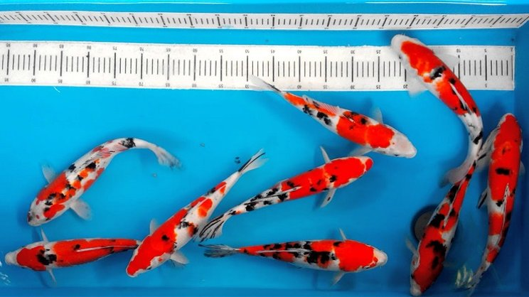

Updated, 15 October 2020

Mas Koki
Originally from China but popular in Japan. Moreover, this fih is also quite popular among Indonesian ornamental fish lovers. This fish is included category because it cannot live with other fish.
Read More
Diposting oleh, Farhan Augustiansyah

Koi Sanke
This koi fish has a characteristic black color that is more dominant, and rescue vibrations. Abstract patterns are added value from this type of koi fish. The price of this type of koi fish is around Rp. 20 million per unit
Read More